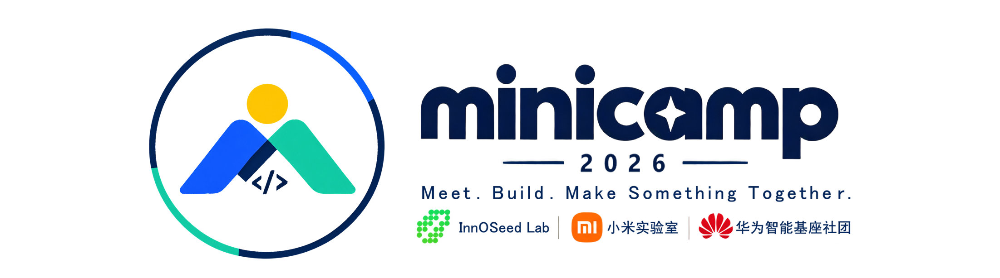
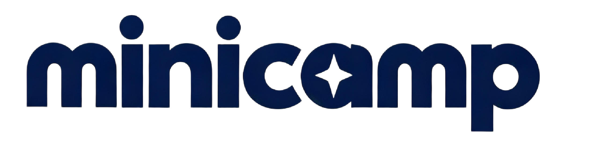
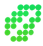

创意与组队
现场公布主题后，用创意激发、想法碰撞和闪电路演把方向收敛，再在组队市场里找到互补的队友。

中南大学校园黑客松 · CAMPUS HACKATHON

MEET. BUILD. MAKE SOMETHING TOGETHER.
MiniCamp 是一群有意思的人，用两天时间，从 0 到 1 构建真正属于你们的作品。你不需要是技术大佬，也不需要想好一切再来。2026 届已于 9 月 26–27 日圆满结束。
WHAT IS MINICAMP
MiniCamp 是中南大学的校园黑客松（Campus Hackathon）。一群有意思的人聚在一起，用两天时间，从 0 到 1 构建真正属于你们的作品——不是听完一场讲座，而是真的把它做出来。
它不是传统意义上的「编程比赛」，不要求计算机专业，也不要求你是技术大佬。你可以负责写代码、做设计、想产品、玩 AI、搞硬件，甚至只是带着一个有意思的想法来现场找队友。具体到某一届的参与范围与规则，以该届页面为准。
活动全程提供 AI Coding 支持：即使以前没有完整做过项目，也可以借助 AI 把想法一步步变成能现场演示的 Demo。作品方向不设单一赛道，网站、App、小程序、AI 应用、游戏、硬件项目、创意交互都可以。
每年 9 月，两天，不通宵。主题在现场公布，队友也在现场找到。
Meet. Build. Make Something Together.
HOW IT WORKS
每一届的具体赛程都会在现场公布；不变的是这条链路：产生 Idea → 认识队友 → 完成组队 → 开始开发 → 做出作品 → 上台展示。
带上你的能力标签，先认识可能一起工作的同学。
围绕一个真实问题组成 3–5 人小队，确定要做的第一版。
用熟悉的 AI Coding 工具开发，卡住就找 Mentor 或 Help Desk。
收住范围，交出一个能稳定运行的 Demo。
在 Demo Fair 体验作品、投票，也认识一起做项目的人。
WHAT'S INSIDE
每一届的环节名称与细节会迭代，但都围绕「想清楚一个问题」和「把它做出来」这两件事展开。
现场公布主题后，用创意激发、想法碰撞和闪电路演把方向收敛，再在组队市场里找到互补的队友。
赛前有 AI Coding Starter Pack，现场有快速上手环节和持续开放的 Help Desk。不审查 Prompt、聊天记录或 AI 生成代码比例。
主办团队成员在现场担任 Mentor / Connector，聊产品范围、技术路线、报错处理和 Demo 风险——但不会替团队做决定。
Day 2 上台做约 3 分钟的舞台路演，同时开放项目展览让所有人上手体验，再由参与者与 Jury 共同投票产生奖项。
参与者反馈里最常见的一句话是「认识了活动前不认识、活动后还愿意继续联系的人」——队友、对手、Mentor，以及之后还会一起做项目的人。
两天之后你会有一个能演示的作品、一次上台讲清楚的经历，以及和主办社团的后续连接；作品也有机会被整理展示与宣传。具体收获以各届实际安排为准。
各届的环节名称与细节会迭代，具体赛程、规则与报名方式请进入对应届次页面查看。赞助与合作方带来的支持（例如 AI 工具额度）由各届单独争取，不构成对后续届次的承诺。
WHO RUNS IT
MiniCamp 由中南大学三个学生社团联合发起：InnoSeed Lab 承担主要的筹备组织工作，小米实验室与华为智能基座社团共同参与组织。三个社团各自有独立的招新安排，与 MiniCamp 的举办时间并不绑定。

EDITIONS
选择你要了解的届次。2026 届已于 2026 年 9 月 26–27 日结束，页面里保留了完整的赛程、规则与奖项记录；2025 届资料正在整理。
WORKS / GALLERY
这里展示历届 MiniCamp 诞生的作品，由官方配置文件提供，可以按届次筛选。部分届次的资料仍在整理中，会陆续补齐。